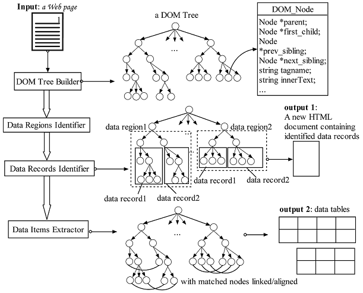

The main process of SDE is written in AppConsole.java. It is developed based on DEPTA method invented by Yanhong Zhai and Bing Liu. DEPTA extracts structured data from a web page in these following steps:

The general architecture of the DEPTA system (Zhai and Liu, 2006)
First, we build a tag tree for the web page. SDE uses NekoHTML Parser to create the DOM tree of the web page, then it creates the tag tree based on the DOM tree. The input parameter is a string parameter in URI format. It refers to the input web page. The ignoreFormattingTags parameter is a boolean parameter. If its value is true, then HTML style formatting tags like B, I, U, etc. will be ignored in the tag tree building (it will be treated as ordinary text).
TagTreeBuilder builder = new DOMParserTagTreeBuilder();
TagTree tagTree = builder.buildTagTree(input, ignoreFormattingTags);
After the tag tree has been built, SDE will create a TreeMatcher object that will be used to calculate similarity score between subtrees in the tag tree. SDE uses an implementation of Simple Tree Matching algorithm. The TreeMatcher objec will be passed as a parameter in MiningDataRegions constructor. MiningDataRegions is an implementation of Mining Data Regions algorithm to identify data regions that exists in the web page. To find those data regions, SDE will call findDataRegions method in the MiningDataRegions object. The method will return a list of DataRegion objects; We can customize parameter values used in Mining Data Regions algorithm like maximum node in generalized nodes (default 9) and similarity treshold (default 90%).
TreeMatcher matcher = new SimpleTreeMatching();
DataRegionsFinder dataRegionsFinder = new MiningDataRegions( matcher );
List<DataRegion> dataRegions = dataRegionsFinder.findDataRegions(tagTree.getRoot(), maxNodeInGeneralizedNodes, similarityTreshold);
For each data region, SDE will extract its data records (rows in a table structure) by calling findDataRecords method in MiningDataRecords object. The method will return an array of DataRecord object.
DataRecordsFinder dataRecordsFinder = new MiningDataRecords( matcher );
DataRecord[][] dataRecords = new DataRecord[ dataRegions.size() ][];
for( int dataRecordArrayCounter = 0; dataRecordArrayCounter < dataRegions.size(); dataRecordArrayCounter++)
{
DataRegion dataRegion = dataRegions.get( dataRecordArrayCounter );
dataRecords[ dataRecordArrayCounter ] = dataRecordsFinder.findDataRecords(dataRegion, similarityTreshold);
}
For each array of DataRecord, SDE will align their data items to transform them into a table (in rows and column) structure. SDE doing that by calling alignDataRecords method in a ColumnAligner object. The method will return a two dimensional array of string that contains extracted data items. SDE uses an implementation of Partial Tree Alignment algorithm in the column alignment. We can choose whether to use the similarity of the data items in the column alignment process or not. If we choose to use the similarity of the data items, SDE will use an implementation of Enhanced Simple Tree Matching algorithm instead of Simple Tree Matching in calculating similarity score in the partial tree alignment process. SDE implementation of Enhanced Simple Tree Matching is not a full implementation because it doesn't use visual information as described by Zhai and Liu (2006).
ColumnAligner aligner = null;
if ( useContentSimilarity )
{
aligner = new PartialTreeAligner( new EnhancedSimpleTreeMatching() );
}
else
{
aligner = new PartialTreeAligner( matcher );
}
List<String[][]> dataTables = new ArrayList<String[][]>();
for(int tableCounter=0; tableCounter< dataRecords.length; tableCounter++)
{
String[][] dataTable = aligner.alignDataRecords( dataRecords[tableCounter] );
if ( dataTable != null )
{
dataTables.add( dataTable );
}
}